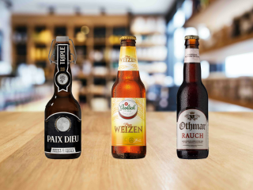
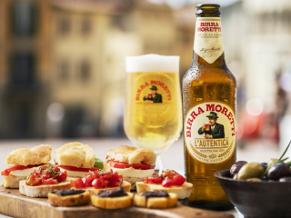
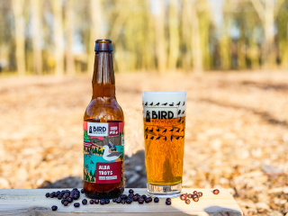
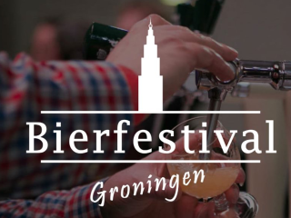
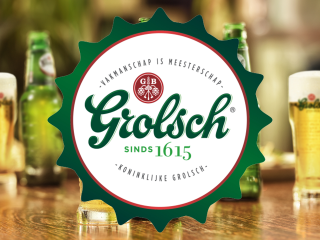
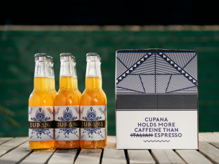
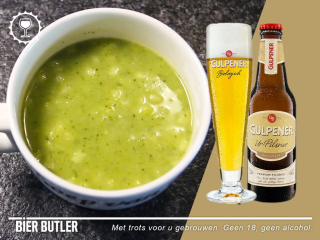
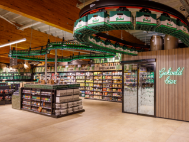
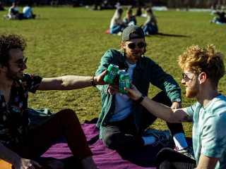

|

Genieten van een lekker trioElke weer maakt de redactie van Bierista een selectie van drie bieren, die hoog worden gewaardeerd door de gediplomeerde Bierista's. |

Birra Moretti verovert Nederlandse bierhartenBirra Moretti, populair in Italië is nu ook in Nederland breed verkrijgbaar. Heineken hoopt met dit merk nog meer Nederlandse bierharten te veroveren. |

Bird Brewery is AlbatrotsBird Brewery lanceert een bijzondere Jeneverbes Saison. Het bier is gebrouwen voor Werelddag van de Bossen op zondag 21 maart. |
|

Groninger Bierdiner bij jou thuisCorona gooit roet in het eten van het Bierdiner Groningen. Gelukkig heeft de organisatie een creatieve oplossing gevonden! |

Nieuw: Grolsch SpeedcourseGrolsch is Brouwerij van de Maand bij Bierista. De eerste 100 mensen die de Grolsch Speedcourse voltooien krijgen een fraai boekje. |

Nieuw: Cupana, verfrissend festivalbierDe oprichters van Thuishaven, ‘s lands grootste wekelijkse festival, introduceren Cupana, een Lager met 5% alcohol en cafeïne. |
|

Bier Butler Vrijdag: Courgettesoep met Gulpener Ur PilsnerOp Bier Butler Vrijdag geeft Bierista je altijd een smaakvolle tip voor het weekend. Deze week een courgettesoep met Gulpener Ur-Pilsner. |

Jumbo en Grolsch zetten bier op een voetstukJumbo en Grolsch hebben een mooi samenwerking in Goor. Op de winkelvloer is een heuse bier-experience gecreeerd. |

Aanpakken met KraftBierKraftBier is een nieuwe campagne gestart onder de noemer ‘Aanpakken’. In deze campagne staat de India Pale Lager, Blotskòps, centraal. |